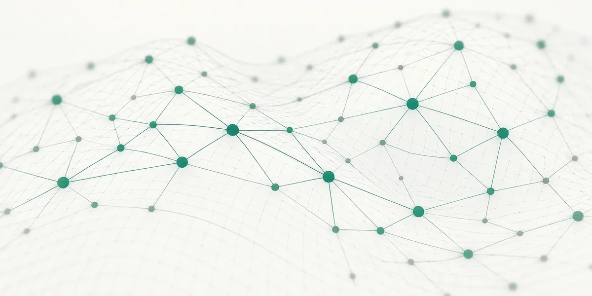

I investigate how randomness, geometry and temporal structure shape networks — and what we can infer or compute from their patterns.
My work connects probability theory, random graph models and algorithms. These five directions overlap: a single paper may bring together geometric models, subgraph statistics and inference.
RESEARCH DIRECTIONS
Explore my interests.
Five connected areas of research. Select a topic to explore its questions and related work.

01 / Models and structure
Network Geometry
I study how latent geometry and degree heterogeneity shape the local and global structure of random networks. Geometric scale-free graphs and random intersection models help disentangle the effects of proximity, heavy-tailed degrees, and clustering. A recurring question is which structural signatures genuinely arise from geometry, and which can already be explained by other features of the network model.
Subgraph counts provide a precise way to study the local structure of random graphs. I investigate motifs appearance, which configurations dominate their counts, and how unlikely deviations from typical behavior occur in the scaling limits. These questions combine asymptotic probability with optimization, particularly in geometric and inhomogeneous networks with strongly heterogeneous degrees.
Observed network connections can carry information about mechanisms that are not directly visible. My work considers how to distinguish latent geometry, homophily, communities, and planted structures from patterns that can arise by chance. The central questions are when detection or recovery is statistically possible, and how algorithms can make use of the available information. These questions are also central to PAiNe, my MSCA Postdoctoral Fellowship project on planted anomalies in networks.
As networks grow in size and complexity, many computational tasks become prohibitively expensive. Scalable graph algorithms address this challenge by making it possible to study large networks while keeping computational costs manageable. I am interested in how probabilistic insights can guide the design of efficient methods, balancing computational performance with rigorous mathematical guarantees. Applications range from generating and sampling random graphs to computing structural statistics and analyzing large-scale network models.
When connections appear and disappear over time, even basic notions such as paths and connectivity become time-dependent. I am interested in random temporal networks, the emergence of temporal connectivity, time-respecting paths and related stochastic processes, including random walks. This is a developing part of my research activity, connecting probabilistic models with questions about dynamic and evolving systems.
01 / 05
FUNDED RESEARCH
Research Projects
Scientific questions developed through collaborative research and funded fellowships.
GSSI
2025–2027 · GSSI
GAMING(PNRR)
Graph Algorithms and Mining for Green Agents. My current postdoctoral research project at Gran Sasso Science Institute.
Postdoctoral researcher
UNIPD
2027–2029 · UNIVERSITY OF PADUA
PAiNe(MSCA)
Planted Anomalies in Networks. My awarded Marie Skłodowska-Curie Postdoctoral Fellowship, focused on probabilistic models and methods for detecting and recovering anomalous patterns.